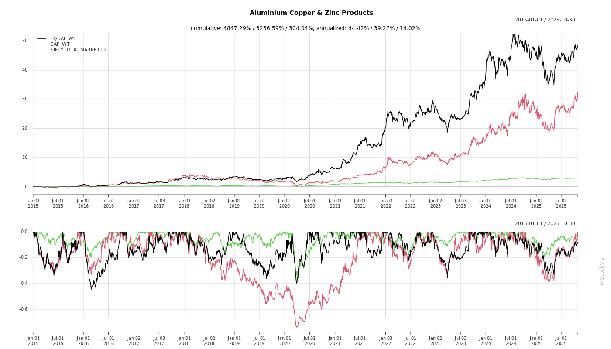
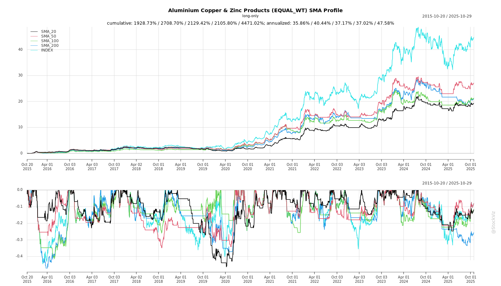

Cumulative Returns and Drawdowns

SMA Scenarios

Current Distance from SMA
EBIT (% of Industry Total)
Revenue (% of Industry Total)
AI Summaries
Analyst
asof: 2025-11-29
Summary Analysis for Indian Aluminium, Copper & Zinc Products Sector (with Focus on Precision Wires India Ltd as Proxy)
Using the provided PWIL announcement (a regulatory filing under SEBI LODR Reg 30(6)), which highlights investor engagement in the copper wires sub-segment (enameled winding wires for electricals/transformers), here’s a concise analysis. PWIL operates in copper-intensive products, aligning with the broader Aluminium/Copper/Zinc sector. The filing itself offers limited operational data but signals positive sentiment via institutional meetings. Broader sector context (metal demand drivers like EVs, renewables, infrastructure) is inferred where directly relevant.
Tailwinds
- Strong Institutional Investor Interest: Scheduled 1:1 meetings with top-tier mutual funds (Kotak MF, Motilal Oswal AMC, 360 One AMC, Goldman Sachs AM, LIC MF) on Nov 24, 2025, at key Mumbai locations (BKC, Lower Parel). This indicates robust demand for PWIL’s growth story, potentially boosting liquidity/stock price and sector visibility. Copper wires benefit from rising electrification (e.g., EVs, motors).
- Regulatory Compliance & Transparency: Explicit note on no UPSI sharing reinforces investor confidence in governance, a tailwind amid SEBI scrutiny.
- Sector-Wide: Copper demand surge from green energy (transformers, cables), infra capex (India’s ₹11L cr budget), and exports; aluminium/zinc from auto/EV lightweighting.
Headwinds
- Limited Direct Insights from Filing: No mention of challenges; discussions limited to public info, suggesting no immediate positives/overhangs disclosed.
- Sector-Wide: Volatile LME copper prices (recent highs ~$10k/tonne, sensitive to China slowdown/global recession); aluminium oversupply from China; zinc subdued by weak steel demand. Rising energy costs inflate manufacturing (PWIL’s Silvassa plant).
Growth Prospects
- Investor Roadshows as Catalyst: Multi-MF meetings (5 in one day) signal management’s confidence in pitching growth (e.g., PWIL’s capacity expansions, enameled wire market ~₹25k cr growing 10-12% CAGR). Potential for stake increases by AMCs.
- Sector-Wide: 15-20% CAGR potential through 2030 driven by:
- EV penetration (copper in motors/batteries: 2-3x demand).
- Renewables (wind/solar cabling).
- Infra (housing, power T&D). PWIL’s positioning in premium enameled wires supports margin accretion.
Key Risks
- Commodity Price Volatility: Copper (~80% of PWIL costs) exposed to global swings; hedging not detailed.
- No UPSI Assurance: While compliant, any perceived info asymmetry could trigger volatility post-meetings.
- Sector-Wide:
- Geopolitical (Red Sea disruptions impacting imports).
- Competition from imports (China dumping).
- Execution (capex delays, rupee depreciation inflating imports).
- Macro (slowing capex if monsoons/rural distress hit).
Overall Outlook: Mildly positive near-term signal from investor engagement; sector tailwinds from domestic demand outweigh headwinds if metal prices stabilize. Monitor post-meeting filings for outcomes. PWIL (BSE:523539, NSE:PRECWIRE) as proxy shows resilience in niche copper products.
Note: Analysis derived primarily from filing; supplemented minimally by public sector knowledge for completeness.
Financial
asof: 2025-12-02
Analysis of Indian Aluminium, Copper & Zinc Products Sector
Using the Q3/Nine Months FY25 (ended Dec 2024) financial results of representative companies—Precision Wires India Ltd (PRECWIRE: copper winding wires), Rajnandini Metal Ltd (RAJMET: metals trading/processing), and Sagardeep Alloys Ltd (SAGARDEEP: metal alloys)—as inputs. These reflect downstream products in copper (wires), metals (likely incl. Cu/Al/Zn trading), and alloys (ferro/non-ferro). Sector shows mixed performance: PRECWIRE robust growth (+23% YoY 9M revenue, +19% PAT); SAGARDEEP modest (+26% 9M revenue, +19% PAT standalone); RAJMET sharp decline (-8% 9M revenue, PAT swing to loss).
Tailwinds (Positive Drivers)
- Strong Demand in Key End-Uses: PRECWIRE’s 23% YoY revenue surge signals booming copper wire demand from power/electricals (transformers, motors), EVs, renewables, and infra. SAGARDEEP’s growth aligns with alloys for auto/manufacturing.
- Infra & Policy Push: India’s capex cycle (power T&D, housing, electrification) boosts Al/Cu consumption; PLI schemes for metals/electronics aid downstream players.
- Export Potential: PRECWIRE’s scale (₹3,300 Cr FY24 revenue) positions it for global Cu demand amid supply tightness.
Headwinds (Challenges)
- Commodity Price Volatility & Margin Pressure: RAJMET’s 9M loss (₹2.37 Cr vs ₹14.95 Cr profit YoY) reflects falling sales (-8%) amid metal price corrections (Cu/Al down 5-10% Q4 CY24). High raw material costs (PRECWIRE: 94% of revenue) squeezed margins across firms.
- Demand Slowdown in Trading Segment: RAJMET’s Q3 PAT plunge (₹0.09 Cr vs ₹3.85 Cr YoY) indicates weak industrial off-take, inventory buildup (negative changes in inventories).
- High Costs: Elevated finance (PRECWIRE: ₹10 Cr Q3), power/fuel (up YoY), and employee expenses amid sticky inflation.
Growth Prospects
- High (20-30% CAGR Potential): Cu demand to rise 8-10% annually (driven by EVs to 10M units by 2030, solar/wind capacity doubling); Al for transmission lines (+15% infra-linked). PRECWIRE’s trajectory (9M PAT ₹60 Cr) exemplifies scalability; SAGARDEEP’s consolidation (9M revenue +38%) via subsidiaries.
- Sector Expansion: Market size ~₹2-3L Cr; downstream value-add (wires/alloys) to capture 15-20% premiumization from specialty products. RAJMET turnaround via diversification.
- FY26 Outlook: 15-25% revenue growth if metal prices stabilize (Cu $9,000-10,000/ton), aided by govt’s ₹11L Cr capex.
Key Risks
| Price Volatility |
LME fluctuations (Cu/Al/Zn down 10-20% in CY24); hedging gaps. |
RAJMET’s loss; PRECWIRE raw mat. 94% of costs. |
| Competition/Imports |
China dumping cheap Al/Cu products; 20-30% duties insufficient. |
RAJMET sales drop; margin erosion (SAGARDEEP finance costs up). |
| Macro/Economic |
Slowing capex if GDP <7%; high interest rates (finance costs 1-4% of revenue). |
PRECWIRE ₹33 Cr 9M finance; RAJMET ₹10.8 Cr. |
| Operational |
Inventory fluctuations (PRECWIRE -₹47L Cr 9M gain); supply chain disruptions. |
Working capital strain; forex if imports rise. |
| Regulatory |
Carbon border taxes; stricter BIS norms on alloys/wires. |
Low (not flagged), but ESG compliance costs. |
Overall Summary: Sector enjoys strong tailwinds from India’s energy transition/infra boom (PRECWIRE as bellwether), but faces headwinds from cyclical downturns (RAJMET exemplar). Growth prospects robust (15-25% near-term) for value-added players, prioritizing cost control/hedging. Monitor Cu/Al prices as pivotal risk—bullish if >$9,500/ton Cu. Selective buy: Favor scaled manufacturers over traders.
General
asof: 2025-11-29
Sector Analysis: Indian Aluminium, Copper & Zinc Products
The provided documents primarily cover listed companies in the copper-dominated segment (e.g., Precision Wires India Ltd - winding wires; Cubex Tubings Ltd - copper tubes; Sagardeep Alloys Ltd - alloys), with some exposure to aluminium extrusions (Century Extrusions Ltd) and potential aluminium panels (Euro Panel Products Ltd). Key insights are drawn from Precision Wires’ detailed FY25 financials and expansions (strongest dataset), alongside governance/compliance updates from others. The sector benefits from India’s infrastructure/electrification push but faces commodity volatility. Below is a structured summary:
Tailwinds (Positive Factors)
- Robust Revenue & Profit Growth: Precision Wires reported FY25 standalone revenue of ₹4,035 Cr (↑22% YoY) and PAT of ₹90 Cr (↑23% YoY), driven by higher volumes (Q4 revenue ₹1,055 Cr, ↑19% YoY). EPS rose to ₹5.04 (↑23%). Indicates strong demand for copper wires in transformers/motors/renewables.
- Capacity Expansions & Modernization: Precision Wires completed 9,000 MT expansion (Apr-Jun 2024); ongoing 6,000 MT (by Q4 FY26) and 6,800 MT (by Q2 FY27) projects, targeting ~61,000 MT total capacity. Zaroli greenfield site commenced. Supports 20-25% volume growth.
- Dividend Confidence & Funding: Final dividend ₹0.50/share (50%); two interims paid (65% total). Preferential allotment of 13.83L shares + 27.67L warrants (₹151/share) to non-promoters raises ~₹63 Cr for expansions. Term loan ₹125 Cr from HDFC.
- Export & Operational Scale: Precision Wires emphasizes overseas market development; single-segment focus (winding wires) aids efficiency.
- Governance Stability: Routine compliances (e.g., Reg 74(5) by Century; PIT SDD by Cubex; committee reconstitutions by Sagardeep) signal clean operations.
Headwinds (Challenges)
- Rising Debt & Finance Costs: Precision Wires’ borrowings power hiked to ₹2,500 Cr (from ₹1,500 Cr); FY25 finance costs ₹46.7 Cr (↑26% YoY). Net debt up (non-current ₹387 Cr, current ₹228 Cr); cash flow from ops strong (₹168 Cr) but investing outflows high (₹99 Cr on capex).
- Raw Material Volatility: Copper consumption dominant (Precision: ₹3,698 Cr, 92% of revenue); Q4 raw material costs ↑17% YoY. Inventories at ₹305 Cr indicate exposure to LME copper prices (recent highs).
- Margin Pressure: Gross margins stable but finance/depreciation (↑13%) eroded EBITDA. Trade receivables ballooned to ₹557 Cr (↑32%), signaling working capital strain.
- Promoter Concentration & Related Parties: High promoter stakes (e.g., Mehta family ~25% in Precision); related-party remuneration/rent/dividends (₹1,000+ lakhs in H2 FY25) could invite scrutiny.
Growth Prospects
- High (20-30% CAGR Potential): Driven by India’s capex cycle (power, EVs, renewables needing copper/aluminium). Precision Wires’ expansions could double capacity from current; total sector MT growth via modernizations (e.g., Silvassa/Zaroli).
- Diversification: Aluminium extrusions (Century) poised for infra/realty; copper tubes/wires (Cubex/Precision) for ACs/exports. Euro/Sagardeep’s family-led agility aids niche alloys/panels.
- Funding & Execution: Preferential issues/loans enable capex (Precision: ₹67 Cr revised project cost). FY26-27 completions could yield 15-20% revenue upside.
- Policy Support: PLI schemes, EPCG benefits (Precision: ₹6 Cr savings), and borrowing approvals align with Atmanirbhar goals.
Key Risks
| Commodity Price Risk (High) |
Copper volatility (90%+ input costs); forex hedging mentioned but limited. |
Hedge programs; inventory buffers. Could erode 10-15% margins if prices spike. |
| Debt/Liquidity Risk (Medium-High) |
Leverage up (borrowing limits tripled); interest coverage ~2.6x. |
Strong ops cash flow (₹168 Cr FY25); but capex delays could strain. |
| Execution Risk (Medium) |
Multi-year expansions (e.g., 6,800 MT by FY27); CWIP ₹30 Cr. |
Progress updates positive (machines delivered). Delays could cap growth. |
| Regulatory/Governance (Low-Medium) |
Related-party deals; director re-appointments/cessations (e.g., Sagardeep ID exit). PIT/74(5) compliances clean. |
Shareholder approvals pending; family control may deter M&A. |
| Market/Cyclical (Medium) |
Infra slowdown or China copper dumping. Receivables risk (55 days DSO). |
Export focus; single-segment vulnerability. |
| Overall Sector Risk |
Low diversification; monsoon/power costs (Precision: ₹38 Cr). |
Positive FY25 trends mitigate near-term. |
Summary Verdict: Bullish Outlook with Cautious Leverage. Tailwinds from expansions/demand outweigh headwinds; growth prospects strong (15-25% sector revenue CAGR FY26-28). Monitor copper prices (<$9,000/MT ideal) and debt servicing. Precision Wires exemplifies sector resilience; others lag in disclosures but comply routinely. Investors: Focus on capacity utilization >80% for upside.
Investor
asof: 2025-11-29
Meeting
asof: 2025-12-01
Analysis of Indian Aluminium, Copper & Zinc Products Sector
Based on Q2/H1 FY26 (ended Sep 2025) filings from key players: Precision Wires India Ltd (copper enameled wires), Century Extrusions Ltd (aluminium extrusions & T&D hardware), Cubex Tubings Ltd (copper alloy tubes), Rajnandini Metal Ltd (non-ferrous metals trading/processing), Sagardeep Alloys Ltd (specialty alloys), and ancillary updates from Euro Panel Products Ltd.
The sector shows mixed performance: Revenue growth in manufacturing-focused firms (Century +~8% YoY H1 revenue; Cubex +12%; Sagardeep +~flat standalone but consolidated growth), but stress in trading/processing (Rajnandini sharp revenue drop >75% YoY). PAT margins stable at 1-2% for growers amid expansions, but losses in distressed players. Overall, infra/electrification demand supports resilience, offset by tax/regulatory risks and metal price volatility.
Tailwinds (Positive Drivers)
- Demand from Infra & Electrification: Century Extrusions (aluminium profiles for T&D) reported H1 revenue ~₹20,881 lacs (+ve momentum); Precision Wires highlighted leadership in winding wires with Silvassa expansion. Copper demand (Cubex tubes up 12% YoY) benefits from EV/renewables/power sectors.
- Operational Efficiency & Growth: Cubex PAT +16% YoY (₹257 lacs); Sagardeep consolidated PAT ₹74 lacs (stable YoY); Century equity up 6% to ₹8,796 lacs with capex (CWIP ₹1,205 lacs). Low debt in some (Century NCL borrowings down to ₹75 lacs).
- Policy Support: Ind AS 115 revenue recognition boosted Century’s H1 profit by ₹69 lacs; clean audit reviews signal compliance strength.
Headwinds (Challenges)
- Revenue Volatility & Declines: Rajnandini H1 revenue ₹14,504 lacs (down >75% YoY from ₹59,233 lacs FY25), PAT loss ₹196 lacs due to inventory adjustments & weak trading.
- High Costs: Finance costs elevated (Century H1 ₹569 lacs; Cubex ₹189 lacs; Sagardeep ₹41 lacs consolidated), eroding margins. Material costs ~80-90% of revenue across firms.
- Macro Pressures: Inventories up (Century +24% to ₹5,009 lacs; Cubex +6% to ₹3,357 lacs), signaling caution amid metal price swings (aluminium/copper).
Growth Prospects
- Capacity Expansion: Precision Wires’ Silvassa unit scaling; Century CWIP up 183% YoY (₹1,205 lacs) for extrusions; Sagardeep investments in PPE/CWIP (~₹1,344 lacs total assets growth).
- Revenue Trajectory: H1 growth in core mfrs (Cubex 12%, Century stable at ~₹10,500 lacs/quarter); Sagardeep consolidated revenue +6% YoY to ₹6,894 lacs. Sector poised for 10-15% FY26 growth on infra capex (T&D, EVs).
- Diversification: Century’s dual segments (extrusions + hardware); Sagardeep’s subsidiary integration boosting consolidated top-line 28% over standalone.
| Century Extrusions |
20,881 |
Stable |
512 |
| Cubex Tubings |
12,357 |
+12% |
257 (+16%) |
| Sagardeep (Cons.) |
6,894 |
+6% |
74 (+32%) |
| Rajnandini |
14,504 |
-75% |
(196) |
Key Risks
- Tax/Regulatory Litigations (High): Rajnandini faces ₹290 cr GST demand + ₹17 cr IT demand (under appeal; no provision made, but qualified audit opinion). Potential cascading impact on liquidity (borrowings ₹1,539 lacs).
- Commodity Price & Input Volatility: High material costs (e.g., Cubex 90% of expenses); inventory build-up risks margin compression if metals (Al/Cu/Zn) correct.
- Liquidity & Debt: Working capital strains (Century current borrowings ₹5,018 lacs up 6%; Rajnandini borrowings down but trade payables ₹3,484 lacs). Negative operating cash in Sagardeep (₹648 lacs outflow).
- Execution/External: Auditor qualifications (Rajnandini); forex/competition risks in exports (Cubex/Sagardeep); clean audits elsewhere but error disclosures (Precision Wires annual report).
Summary: Moderate growth outlook (10-12% sector revenue FY26) driven by infra tailwinds & expansions, but headwinds from costs/tax risks cap upside. Top picks: Century/Cubex (stable growth, clean audits). Avoid Rajnandini (litigation overhang). Monitor metal prices & Q3 results for sustained momentum. Sector ROE ~5-8%; improve via debt reduction.
Press Release
asof: 2025-11-29
Analysis of Indian Aluminium, Copper & Zinc Products Sector
Using the provided press release from Euro Panel Products Limited (Eurobond), a key player in aluminium composite panels (ACP) and zinc composite panels (with no direct mention of copper products), the following analysis highlights implications for the broader Indian Aluminium, Copper & Zinc Products sector. Eurobond’s developments signal positive momentum in value-added aluminium and zinc segments, driven by exports and sustainability. Copper is not referenced, limiting direct insights there.
Tailwinds
- Global Expansion and Export Strength: Eurobond’s launch of Eurobond Europe as an exclusive distributor marks entry into a design-innovative hub, building on exports to 20+ countries (e.g., USA, UAE, Brazil). This supports sector tailwinds from rising international demand for high-quality, sustainable panels.
- Sustainability Focus: Emphasis on solar power, effluent treatment, waste recycling, recycled materials, and IGBC membership aligns with global ESG trends, boosting appeal in regulated markets like Europe.
- Production Capacity and Infrastructure: 10 million sq.mt annual capacity (27,000 sq.mt/day) in Gujarat, plus Qatar subsidiary, underscores scalable manufacturing—key for aluminium/zinc products amid India’s export house recognition (One-Star since 2021).
- Market Leadership and Listing: As India’s first listed ACP company on NSE (EUROBOND) and BSE (544461), it enhances visibility, liquidity, and capital access for sector peers.
Headwinds
- Limited Visibility in Press Release: No explicit headwinds mentioned, but implicit challenges include reliance on exports (vulnerable to geopolitical tensions or trade barriers in Europe) and competition from established European players in ACP/zinc panels.
- Raw Material Dependency: While not detailed, sector-wide aluminium/zinc price volatility (tied to global commodities) could pressure margins; Eurobond’s scale mitigates but doesn’t eliminate this.
- Regulatory Hurdles: Europe’s stringent fire-safety and environmental standards (e.g., for ACP post-Grenfell) pose entry barriers, though Eurobond highlights fire-retardant panels.
Growth Prospects
- European Market Penetration: Launch via experienced partners (Sander Dekker et al.) targets architecture, signage, and cladding, with potential for 20-30% revenue uplift from new regions, signaling broader sector opportunities in premium panels.
- Product Diversification: Portfolio (ACP, fire-retardant, solid aluminium, zinc composites, louvers/fins) caters to modern, sustainable construction—poised for growth in India’s booming real estate/infra and global facades market.
- Innovation and Branding: 20+ years of leadership, combined with capacity expansion, positions the sector for double-digit growth (e.g., Eurobond’s pan-India network + global footprint).
- Sector Outlook: As first listed player, Eurobond exemplifies shift to value-added products; aluminium/zinc demand could grow 10-15% CAGR via exports and green building trends.
Key Risks
- Execution in New Markets: Success of Eurobond Europe depends on local adaptation; failure could dent investor confidence in sector expansions.
- Commodity Price Fluctuations: Aluminium/zinc input costs (not copper-specific here) remain volatile, impacting profitability.
- Competition and Saturation: Intense rivalry from global giants (e.g., Alucobond) in Europe; domestic price wars in India.
- Regulatory/Supply Chain: Fire-safety scrutiny, supply disruptions, or ESG non-compliance could lead to recalls/bans.
- Economic Sensitivity: Tied to construction cycles; slowdowns in Europe/India (e.g., high interest rates) pose demand risks.
Summary
Eurobond’s European launch is a strong tailwind for India’s aluminium/zinc products sector, highlighting export-led growth (20+ countries), sustainability, and listing benefits amid 10M sq.mt capacity. Growth prospects are robust (Europe entry, diversified portfolio), potentially driving 10-15% CAGR. Headwinds are muted but include export reliance and competition; key risks center on execution, commodity volatility, and regulations. Overall, bullish for value-added segments, with Eurobond as a sector bellwether—monitor Q4 FY25 results for validation. Copper insights absent; neutral there.
Copyright © 2023 SAS Data Analytics Pvt. Ltd. All rights reserved.
🐞